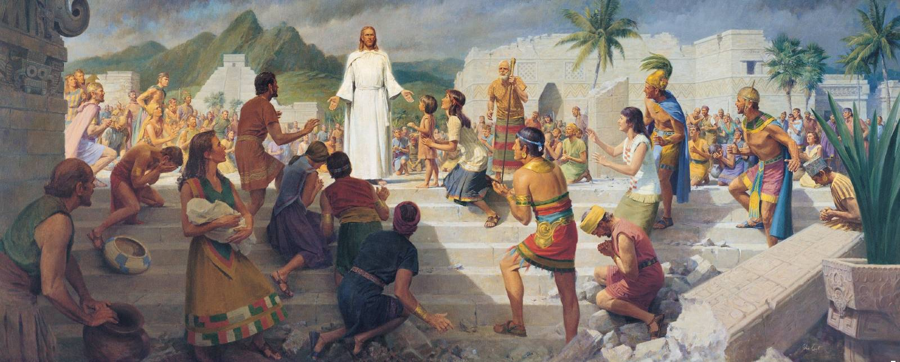
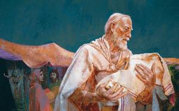
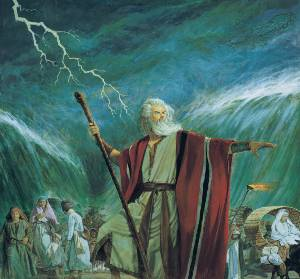
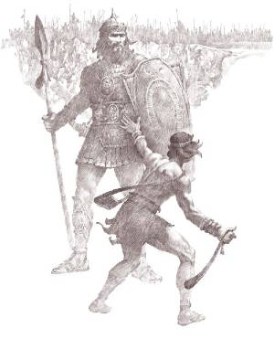
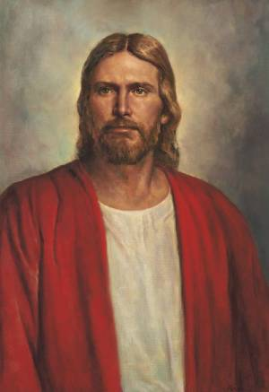
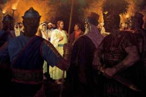
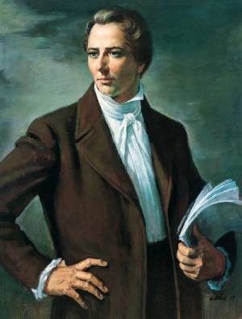

Dispensations
The Creation
The Beginning
From the beginning of time, God has always had a plan for His children. This plan required that His children or us, for this matter, be tested and have to choose for ourselves the life we want to lead. God needed to create a place where we could be tested, and so He began this process. Under God's direction, Jehovah and Michael began creating the earth as we know it today. After six days of work and one of rest, the creation was complete. Now, God needed to place His children on earth and let His plan play out. It was Adam and Eve who were first placed on earth and thus began the entire human family.
Adam & Eve: Our First Parents

Adam and Eve were the first of God's children here on earth. As we know, Adam and Eve were forced out of the Garden of Eden after partaking of the forbidden fruit. This caused them to become mortal, susceptible to sickness, injury, and worse, sin.
Luckily, the fall of Adam and Eve was part of God's plan. Satan was not aware that God had prepared for this to happen to Adam and Eve. God had already created a Plan of Salvation for Adam, Eve and all of His children that would ultimately be born on earth. This plan required Adam and Eve to have children, create and strengthen a relationship with God even though they were not in His presence, and finally, teach their children.
Today, we are part of the family that Adam and Eve created. We are still cut off from God's presence, but we do know Jesus Christ and God, who is our Heavenly Father. Jesus Christ taught His Gospel long ago when He ministered here on earth. Adam and Eve were the first to learn of Christ's Gospel, and they even began to make promises and complete ordinances like baptism. Adam and Eve, over their life, learned to progress and become better people. This is the point of our lives.
Through the Plan of Salvation, we can fulfill all of the ordinances that God wants us to complete here on earth. We have Christ's Gospel to teach us how to act. As we strive to live righteously as Adam and Eve did, we can return to God's presence where we will no longer be cut off from Him.
Enoch, Noah & Melchizedek: The Fathers

The Enochian Covenant
During the time that Enoch, Noah, and Melchizedek were on the earth, there were an innumerable amount of wicked people. These wicked people began to persecute the righteous, and especially Noah. It just so happened that Enoch, a righteous prophet of God, was worried about what he was seeing. He prayed to God and asked that future generations and especially Noah's seed would be taught righteousness. God promised Enoch, creating the first recorded covenant in the scriptures, that Noah's seed would be flooded with righteousness in preparation for the return of Christ. This covenant with Enoch ensures that the everlasting covenant will be offered to all people in the latter days.
The Noahic Covenant
The Noahaic covenant is not much different from the Enochian covenant. It is a reaffirmation of the Enochian covenant with Noah. Noah's seed is the remnant of the chosen seed that will always be found here on earth, and the same seed that God talks about in the Enochian covenant. In this covenant with Noah, God promises that He will never again flood the earth with water. Instead, God will flood the world with righteousness in preparation for Christ's return in the final days. God also offered the rainbow as a symbol of the covenant and reminder to all that He continues to keep His promise made with Noah.
Who Was Melchizedek?
Melchizedek was a prototype king and priest within the order of the covenant God made with Enoch. While there was no specific covenant made between God and Melchizedek, it is still essential to understand who Melchizedek was.
Melchizedek was a man of great faith. He sought righteousness in all aspects of his life, especially when it came to being a king. His people called him the Prince of peace or King of peace. Melchizedek was approved of God and became a High Priest. As King and High Priest, Melchizedek put at defiance nations, did all things according to God's will, and subdued principalities and powers. Melchizedek did nothing except what was the will of God. These are the reasons why the highest order of the priesthood is called the Melchizedek Priesthood. This name is supposed to remind us of the nobility and righteousness that holders of God's priesthood's highest order should possess.
Abraham: The Seeker
The Abrahamic Covenant
Abraham sought the blessings of Enoch, Noah, and Melchizedek. Abraham wanted to know how he could receive the blessings of the everlasting covenant. God eventually blessed Abraham with the blessings of the everlasting covenant and even gave him the priesthood authority to provide those same blessings to others. This all occurred after Abraham led his people to the land of Canaan. All of the blessings that Abraham was blessed with are known as the Abrahamic Covenant.
These are the promises made to Abraham and his seed: 1) His posterity would be numerous. 2) His seed would receive the gospel and bear the priesthood. 3) Through the ministry of his seed, all the families of the earth would be blessed with the blessings of the Gospel and salvation. The covenant between Abraham and God was eventually renewed to Abraham's son Isaac and grandson Jacob. Today Christ's Everlasting Gospel continues to reach the four corners of the earth because of the covenant that Abraham made.
If it were not for the Abrahamic Covenant, you and I would not have the opportunity to learn of and, in turn, teach of Christ. Christ's Plan of Salvation continues because of the righteous seed of Abraham.
Moses: A True Leader
The House of Israel
Moses is an important character in the Old Testament for many reasons. Moses and his brother Aaron were successful in freeing the Israelites from Pharaoh's oppressive rule. The once enslaved Israelites then became Moses' people. He led them with the help of the Lord and taught them many things. One of this dispensations highlights is when Moses went up to Mount Sinai for 40 days and there received the Ten Commandments. However, upon returning to the Israelites, Moses found that they had fallen away from God and began worshipping idols. Moses was lost and knew not what to do, so he went back up to a high place, Mount Sinai. The Lord revealed unto Moses a law lesser than the Ten Commandments, and more strict. This law is known as the Law of Moses.
The Lord had a plan for Moses and the Israelites, and this plan included them building a tabernacle or temple. The Lord desired that Moses and the Israelites worship Him in this temple and use it to become prepared to enter into the promised land. For 40 years, Moses and the Israelites wandered in the the wilderness before they were permitted to enter into the promised land.
A Cardinal Dispensation
This dispensation is important because the Lord set a standard for His people and explicitly showed them what He expected of them. This dispensation also contains many examples of the love of God. God wanted His people to be free and safe, so He called a prophet to lead them to safety. Today, God continues to call prophets that lead His people to a "promised land." The Lord will continue to call prophets until He returns to earth to reign forever.
David: An Unlikely King
David vs. Goliath
The story of David defeating Goliath is well known; however, David's story becomes less known after his victory. God instructed the prophet Samuel to anoint a new king of the Israelites to replace Saul. Saul, the current king, had become corrupt, and the Lord wanted to replace him. After David defeated Goliath, Saul invited David to come to live with him. From then on, David acquired fame and become very popular among the people of Israel. Saul eventually died, and David became the king of Israel.
The Davidic Covenant
David saw a great need to place the Ark of the Covenant in a holy place. He proposed that his people build a beautiful temple for the Ark of the Covenant, but the Lord refused the offering. Instead, the Lord covenanted with David that his kingdom and posterity would last forever (2 Samuel 7). However, David would not be the one who's kingdom would be established forever. Instead, Christ would come from David's seed, set up His kingdom here on earth, and this would be the kingdom that would be established forever.
David's Fall
Unfortunately, the story of David ends in a much less brilliant way, then it started. David fell into the sin of adultery with Bathsheba, and he continued to fight with the consequences of this sin until the end of his life. This is perhaps the most significant lesson taught by David to his people and us; we must endure to the end. It does not matter how righteous of a life you live if you cannot endure to the end and remain faithful and loyal to God unto the end. David showed us how damaging sin could be to our spirits, and it is our job to learn from his mistakes. However, David's reign was vital to God's plan for His children, and for His only begotten son Jesus Christ. Through David, Christ was able to lead a life here on earth where the promise made to David was fulfilled when Christ established His everlasting kingdom and Gospel here on earth.
Jesus Christ: Our Redeemer
The Kingdom of all Kingdoms
Of all the great prophets and gospel, Jesus Christ is the greatest. Before coming to earth, He played an important role in the early prophets' lives. He made covenants with Adam, Enoch, Noah, Abraham, Moses, and even David. During David's reign in Israel, it was said that he should establish a kingdom forever, but as we know, David wouldn't be the king of this kingdom to be. Christ, the soon to be Savior of the world, would be the king of this everlasting kingdom.
Christ came to earth and, in short, established His kingdom here on earth. He brought the Gospel with Him and spread it everywhere He went. Christ's mortal ministry was as important, if not more, than His time before coming to earth. Christ began fulfilling many prophecies that the prophets of old had made. One of these prophecies was that Christ would make an everlasting sacrifice. Christ did just that when he submitted himself to the will of His Father and died on the cross for all mankind.
An Everlasting Gospel
Christ knew that His time on earth would be short. He called Apostles to continue His work after He was gone, and they did just that for as long as they could. Christ has always had a plan for His kingdom, and His death was a vital part of that plan. Christ's everlasting gospel permits us to be redeemed from the fall and our transgressions as we follow Him by making and keeping covenants or promises. Certainly Christ did not pay the ultimate price just so that we can sit back and await His return. Like Him, we are required to sacrifice the imperfect parts of us and become better through Him so that we can live worthy of the eternal life that we try to achieve. Jesus Christ made eternal life possible through His resurrection, and we, too, will be resurrected once we pass away. Christ has given us hope even beyond the grave.
Hear Him
Although Christ is not with us here on earth, we can still hear him. He has called prophets and apostles once more, just as He did in times of old. We have access to the Holy Ghost as we are baptized and live a righteous life. We have every right to the kingdom of God if we live a life centered around it. Christ. One day, shortly, Christ will return, and we will be required to show Him our works. My prayer is that each one of you reading this will believe this message and follow Christ. He truly is our Lord and Savior.
The Great Apostasy
A Church in the Wilderness
It didn't take long for Christ's church to become persecuted. His Apostles did the best they could, but many evil people sought to destroy what Christ had created. Instead of allowing His church to become corrupt, the Lord hid His church for a time. This time is known as the Great Apostasy. During this time, little spiritual influence was on the earth except for those who God had chosen to be influenced so that His plan would continue. For centuries, Christ's revelation to man on earth was silenced. During this time, many new religions claiming to be the one created by Christ himself erupted and found many followers. However, no man could recreate the church that He had once established without God's consent and direction. Instead, Christ would need to restore what was once on the earth.
A Need For Restoration
Even today, Christ's church is confused with many other sects and religions that were formed during the Great Apostasy. However, Christ's church remains intact and perfect today because He is the head of it. He, through a prophet, leads His saints. It is important to recognize that Christ did not willfully abandon the earth during the Great Apostasy. His church was forced into hiding because of the wickedness of those that chose to persecute it. Even then, Christ did not completely cut ties with people here on earth. Many people were influenced to make decisions that would ultimately prepare the world for the restoration of Christ/s church. One of these men was Joseph Smith. Joseph Smith, before the church of Jesus Christ was restored to the earth was influenced by God to prepare himself to become a prophet. This could not have happened if God completely retired himself from the earth. We must know that God never abandons us or leaves us without guidance.
The Fulness of Times: Joseph Smith
Inspired Curiosity
Joseph Smith, like many of the prophets before him, sought to find the truth. Joseph Smith was a young boy who wanted to know which of the churches was true. Little did he know, he would be called to restore Christ's only true church. Joseph began asking many questions and continued asking questions until he received the knowledge that he desired. He was called to restore the Church of Jesus Christ of Latter-day Saints and prepare the way for Christ's kingdom's growth and expansion here on earth. He translated the Book of Mormon, portions of the Holy Bible, and even received direct revelation from Christ that became the Doctrine & Covenants. All of this happened because Joseph was curious. The Lord also impressed Joseph to search for truth so that he could be called upon to restore the true church that once was.
Sacrifice After Sacrifice
Joseph Smith was tasked with restoring something that he was not around to see be built. This task required him to rely heavily on revelation and heavenly guidance. Usually, these revelations caused. Joseph to begin work that would pull occupy most of his time. Before the restoration of the church in 1830, Joseph spent much of his time learning and preparing to lead as a prophet of God. This required sacrifice on his part and his family's part. Most of Joseph Smith's life was spent sacrificing himself so that others could be blessed. I have been very inspired by Joseph Smith's willingness to give up his own life to grow Christ's church. He submitted himself to the will of God in nearly every aspect of his life. Towards the end of his life, the prophet spent most of his time teaching and preparing the apostles for life without him. Joseph knew that he would eventually be killed and needed to pass on the keys of the kingdom and other necessary knowledge to those that would continue on this earth. It must have been difficult to spend your final days away from family and friends, but in the end, every sacrifice made by Brother Joseph has gotten Christ's saints where they are today.
The Passing of the Mantle
Christ has never intended for one man and only one man to be prophet forever. When Joseph Smith was killed, Christ called another prophet. Brigham Young was called to carry the mantle of being prophet during a time when the church was under heavy persecution. Like Joseph, Brigham Young was lead by God to continue building His church. Even today, Christ continues to call prophets that lead His church and the saints on earth. The dispensation of the fulness of times is a period of restoration and of gathering. Peter described the work in terms of a restoration: "And he shall send Jesus Christ, which before was preached unto you: "Whom the heaven must receive until the times of restitution of all things, which God hath spoken by the mouth of all his holy prophets since the world began." (Acts 3:20–21.) Every prophet called in this dispensation is required to help bring to pass all of the promises made in all previous dispensations. Christ will lead His prophets and people as they do this work, and eventually, Christ will come to finish off work. At this moment, when Christ comes, will the dispensation of the fulness of times end. Until then, Christ has a mighty work for all of us to do.
Millennium & Celestial Glory: A Time For Christ's Reign
The Thousand Years of the Millennium
This time will be ushered in when Christ comes again to earth for the second time. This will culminate the final dispensation, the Fulness of Times, and Christ will begin his reign on earth. During this time, the earth will be renewed for the millennial day. This meaning that the earth will be prepared for paradisiacal glory and then rest for 1,000 years from all wickedness. Satan will be bound during this time, and people on earth will continue growing, living, and learning from Christ.
Eternal Glorification
Sometime after the millennium, the earth will be sanctified and receive its eternal glory. However, before this happens, the devil will be loosed for a short time, and he will bring wickedness to the earth once more. A final war will happen on earth between Christ's people and the devil's followers. At the end of this war, the devil will be expelled from the earth forever, and the earth will finally see no more wickedness.
Judgement
During this time, a final judgment will also take place. All men and women will be judged for their works. They will be placed in a degree of glory where they will be most comfortable, and these glories are celestial, terrestrial, and telestial. Based on our commitment to God here on earth, we will be allowed to live, eternally, in one of these degrees of glory. Christ will reign on earth, and those that are rewarded with celestial glory will live with Him. This period will never end. This is why it is so important that we choose to follow God while here on earth to become heirs of Christ's kingdom. He wants us to be with Him, but how willing are we to sacrifice everything to be with Him?